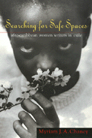

In exile but finding no refuge, Afro-Caribbean women portray harsh lives
In exile but finding no refuge, Afro-Caribbean women portray harsh lives


 In exile but finding no refuge, Afro-Caribbean women portray harsh lives
In exile but finding no refuge, Afro-Caribbean women portray harsh lives

|  |
Searching for Safe SpacesAfro-Caribbean Women Writers in ExileMyriam J. A. Chancypaper EAN: 978-1-56639-540-3 (ISBN: 1-56639-540-2) |
"[A] fine book. Searching for Safe Spaces explores some of the major issues of our historical moment: migration, exile, African diaspora, and the position of women within that context. It addresses some of the most vibrant new writings in the Americas and will bring wide readership to these excellent writers."
—Gay Wilentz, author of Binding Cultures: Black Women Writers in Africa and the Diaspora
Home. Exile. Return. Words heavy with meaning and passion. For Myriam Chancy, these three themes animate the lives and writings of dispossessed Afro-Caribbean women.
Understanding exile as flight from political persecution or types of oppression that single out women, Chancy concentrates on diasporic writers and filmmakers who depict the vulnerability of women to poverty and exploitation in their homelands and their search for safe refuge. These Afro-Caribbean feminists probe the complex issues of race, nationality, gender, sexuality, and class that limit women's lives. They portray the harsh conditions that all too commonly drive women into exile, depriving them of security and a sense of belonging in their adopted countries—the United States, Canada, or England.
As they rework traditional literary forms, artists such as Joan Riley, Beryl Gilroy, M. Nourbese Philip, Dionne Brand, Makeda Silvera, Audre Lorde, Rosa Guy, Michelle Cliff, and Marie Chauvet give voice to Afro-Caribbean women's alienation and longing to return home. Whether their return is realized geographically or metaphorically, the poems, fiction, and film considered in this book speak boldly of self-definition and transformation.
Excerpt available at www.temple.edu/tempress
"Chancy's study appears atypical of some of the works appertaining to African-Diasporic women writers. Examining the works of Carribean women writers such as Michelle Cliff, Marie Chauvet, Joan Riley, Beryl Gilroy Voice, and Audre Lorde in reference to their identities and their nation/country is what makes Chancy's work intriguing."
—NWSA Journal
Prologue "Natif-Natal"
Acknowledgments
1. Productive Contradictions: Afro-Caribbean Diasporic Feminism and the Question of Exile
2. Exiled in the "Fatherland": Joan Riley and Beryl Gilroy Voice Afro-Caribbean Women
in Britain
3. "Good Enough to Work, Good Enough to Stay": M. Nourbese Philip, Dionne Brand, and
Makeda Silvera and Women's Dignity in Canadian Exile
4. Remembering Ourselves: The Power of the Erotic in Works by Audre Lorde, Rosa Guy,
and Michelle Cliff
5. Exile, Resistance, Home: Retelling History in the Writings of Michelle Cliff and Marie Chauvet
Epilogue "Return"
Notes
Works Cited
Index
 | Myriam J. A. Chancy is Associate Professor of English at Arizona State University, Tempe. She is the author of Framing Silence: Revolutionary Novels by Haitian Women. |
Women's Studies
Literature and Drama
Race and Ethnicity
© 2015 Temple University. All Rights Reserved. This page: http://www.temple.edu/tempress/titles/1341_reg.html.